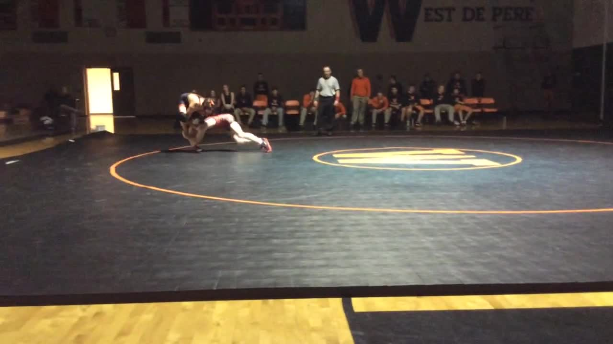

"More enduringly than any other sport, wrestling teaches self-control
and pride. Some have wrestled without great skill - none have wrestled
without pride."
-Dan Gable
West De Pere Wrestling

"More enduringly than any other sport, wrestling teaches self-control
and pride. Some have wrestled without great skill - none have wrestled
without pride."
-Dan Gable
The West De Pere Wrestling Club is an organization dedicated to promoting the sport of wrestling as a fun and affordable way for student-athletes to grow in physical strength, mental toughness, self-discipline, and self-confidence. Practices and competitions at the youth, middle school, and high school levels focus on these goals and the pursuit of becoming better wrestlers, athletes, and people each and every time we touch the mat.